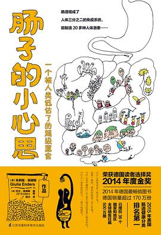

医学类
《只有医生知道》
豆瓣评分：8.5
生孩子是个一气呵成的连贯动作，每个女人生孩子都有专属于自己的节奏和步调，也就是说有快有慢。快的前后不到三个小时就能搞定，慢的可能要二十几个小时甚至更长。人世间万事万物都有各自固有的运行规律，中庸之道最保险，超出这个大致界限的要么是凶险，要么是极品。

《肠子的小心思》
豆瓣评分：9.0
欧美国家有句俗语，“you are what you eat”，你吃的什么决定了你是怎样的人。其实不仅仅是你吃下去的东西，你的肠子对什么敏感、能吸收什么，也决定了你是怎样的人、有着怎样的生活质量。

《皮肤的秘密》
豆瓣评分：8.0
许多护肤品都宣扬自己的产品能够调控皮脂腺，有效控制皮肤出油。简直是一派胡言！皮脂腺位于皮肤深处，油脂位于地下二层，任何护肤霜都无法渗入这里，就连抗痤疮的处方药也对皮脂的过度分泌无可奈何。